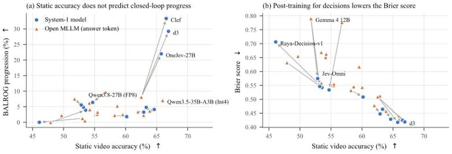

arXivWork with Meta AIS1Arena-MM: Which Multimodal Decisions Can Be Left to System 1?
We introduce S1Arena-MM, a benchmark that scores the decision probabilities of 33 open models on 51K image, video and audio questions across 94 tasks and in 102 closed-loop games, finding that single-pass System-1 models rival or beat MLLMs on static decisions and clearly lead in closed-loop play.